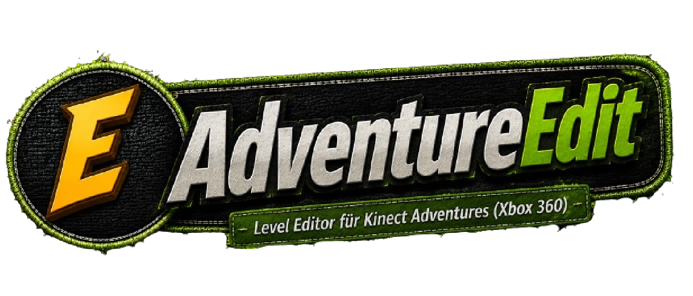

AdventureEdit
Level Editor für Kinect Adventures (Xbox 360)
Alpha Version v1.2
...
GitHub Stars
Xbox 360
Kinect Adventures
Features
Öffnen von Kinect Adventures Level-Dateien.
Anzeige aller gefundenen Objekte.
Objekte werden nach Gruppen kategorisiert:
Track
Obstacle
Timer / Logic
Anzeige des internen Namens jedes Objekts.
Bearbeiten von Objektkoordinaten.
Speichern der Änderungen zurück in die Level-Datei.
Schnellstart
Kinect Adventures ISO extrahieren.
Level-Datei mit Gildors decompress.exe entpacken.
rredit.exe starten.
Die gewünschte Level-Datei öffnen.
Objekte bearbeiten und speichern.
Projektstatus
✅ Level-Dateien öffnen
✅ Objekte anzeigen
✅ Gruppen anzeigen
✅ Koordinaten bearbeiten
❌ 3D-Ansicht
❌ Objektplatzierung
❌ Objektlöschung
❌ Texturen
Download
Download AdventureEdit
rredit.exe
Unterstützte Daten
Objektnamen
Gruppen
Koordinaten
Track-Daten
Obstacle-Daten
Timer/Logic-Daten